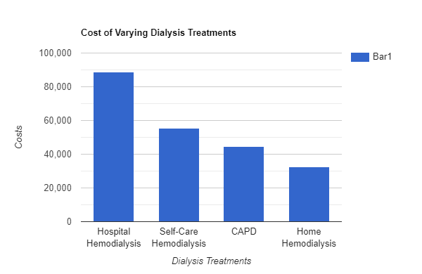

PKD is a genetic disease that causes cysts to grow inside the kidney, making it much larger than it should be which damages the tissue. Cysts are sacs filled with liquid and in PKD grow in the Nephrons of the kidney. PKD is a common genetic disease, affecting more than 12 million people worldwide. PKD can cause kidney failure in which a person would need a kidney transplant, or they could do dialysis, which in a varying time period, someone would be hooked up to a machine and have their blood filtered.
On the left there is a kidney with PKD, compared to a normal kidney it is much larger and it is apparent that it does not look normal. In Rare cases PKD can cause kidneys to weigh as much as 30 lbs. and can lead to kidney failure.
People with severe PKD could potentially have Kidney Failure or a reduced function in their kidney. There is no cure for PKD, but there are new treatments in development and treatments available right now. As mentioned before, Dialysis is a common method to support the kidneys in filtering the blood and removing waste from the body. Pubmed.gov states “The average costs per patient year were $88,585 for hospital hemodialysis, $55,593 for self-care hemodialysis, $44,790 for CAPD, and $32,570 for home hemodialysis.” In low to mid income families this can be a huge burden that is hard to deal with.
There are many ways to help people with PKD. Donating money and starting fundraisers are direct ways to help PKD patients. However, simply bringing awareness to people about, not only PKD, but genetic diseases in general will help many people that face the struggles of paying yearly treatment for a genetic disease with no cure.
created with
Website Builder Software .